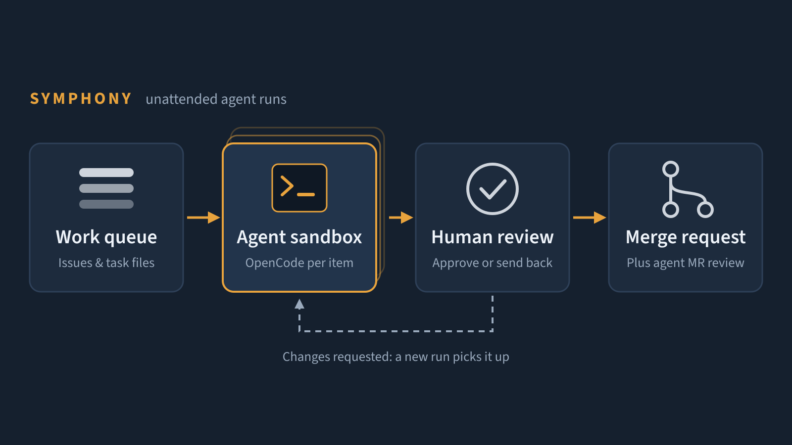

Autonomous Agent Runs & MR Review
SAAB Danmark A/S
An adaptation of OpenAI's Symphony spec that runs coding agents unattended against a queue of work, either a folder of markdown files or GitLab issues. Each item runs in its own copy of the sandboxed OpenCode environment, and finished work waits at a human review gate. It also runs agent reviews of merge requests.
Runs coding agents unattended against a queue of issues, each in its own sandbox, with a human review gate before anything merges.